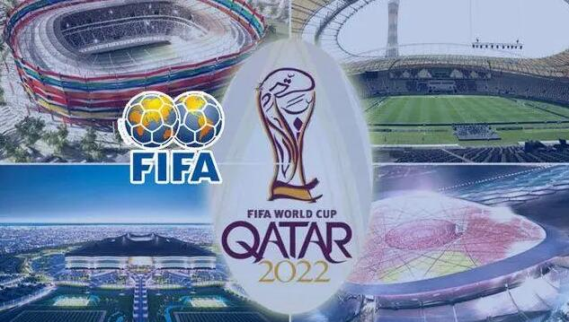

2022年卡塔尔世界杯
2022年卡塔尔世界杯（英语：FIFA World Cup Qatar 2022）是第二十二届世界杯足球赛，是历史上首次在卡塔尔和中东国家境内举行、也是第二次在亚洲举行的世界杯足球赛。除此之外，卡塔尔世界杯还是首次在北半球冬季举行、首次由从未进过世界杯决赛圈的国家举办的世界杯足球赛。
2020年7月15日，2022年卡塔尔世界杯赛程公布，全部比赛在卡塔尔境内8座球场举行。 2022年6月15日，决赛阶段热门球队全部确定。 该届赛事揭幕战于11月21日0时（当地时间11月20日19时）进行，由东道主卡塔尔对阵厄瓜多尔；决赛于12月18日23时（当地时间12月18日18时）在卢塞尔体育场进行。
筹备工作
